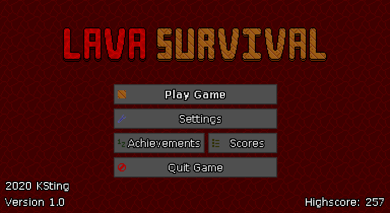
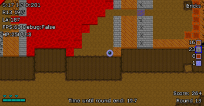
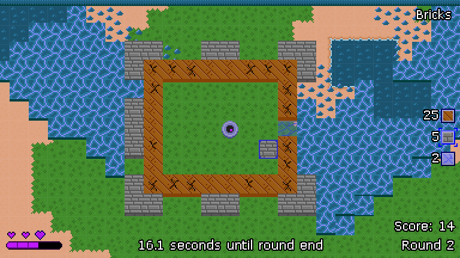

Lava Survival
Released: July 28, 2020
My first game made using Godot! I could go on and on about how Godot is way better than GMS2, but I'll save that for another time. This game was inspired by the lava survival modes sometimes seen in very old Minecraft servers. The gameplay loop on those old servers goes something like: collect blocks, build defenses, survive a wave of lava, repeat. This game is pretty much the same.
This game has a lot of firsts for me. Leaderboards! Character customization! Code that's actually somewhat decent! All stuff I thought I would never be able to pull off back when I was making Vanadius. Some things can be a little buggy, but not to the point of making the game unplayable.
Overall I'm quite proud of how it turned out, though if I gave it more time (and better game design), it could definitely have been much more enjoyable to play.
Game Download
Wanna play? You can get the game on itch.io for free!
Extras
The source code is available on Github. It's a little outdated and slightly broken, but it's complete.


